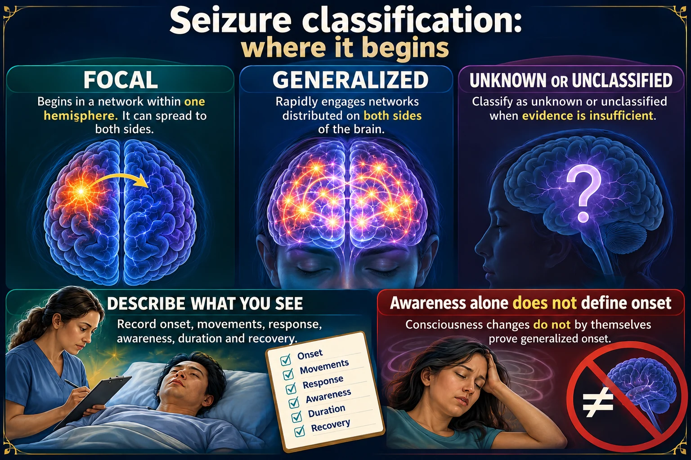
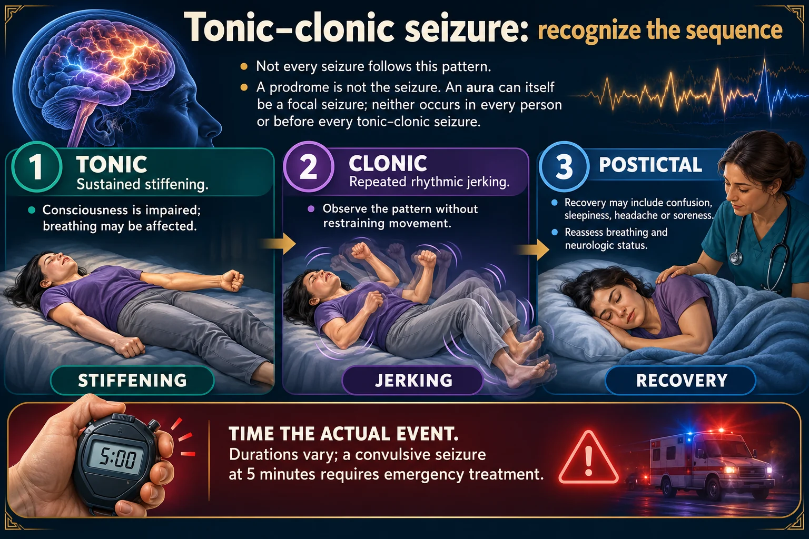
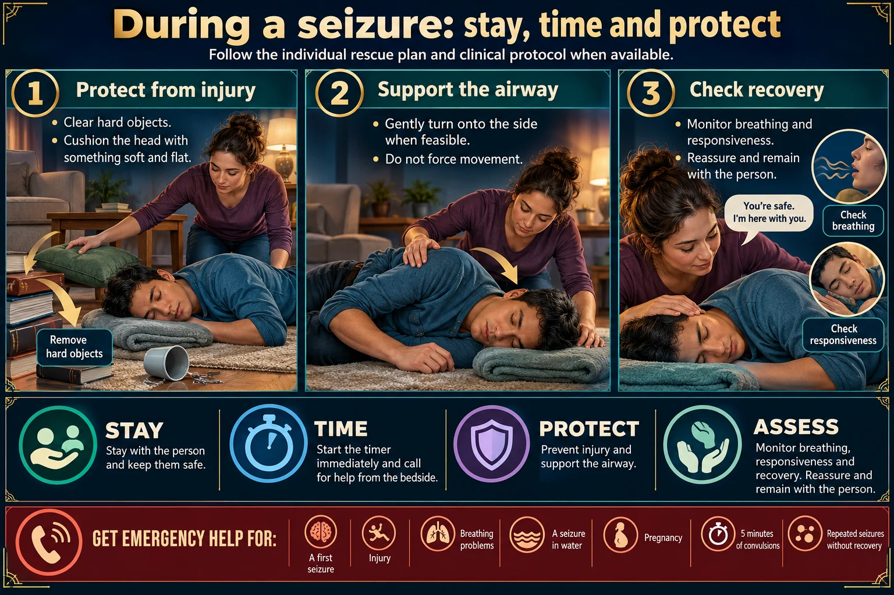
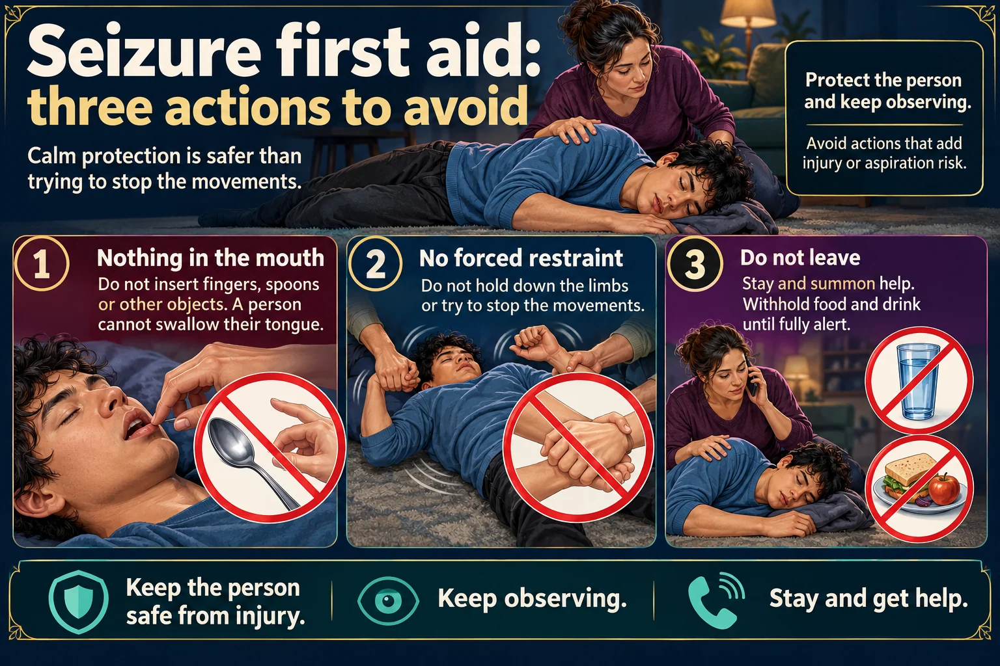
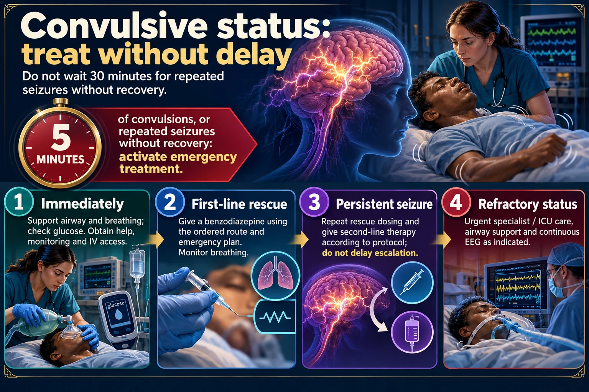
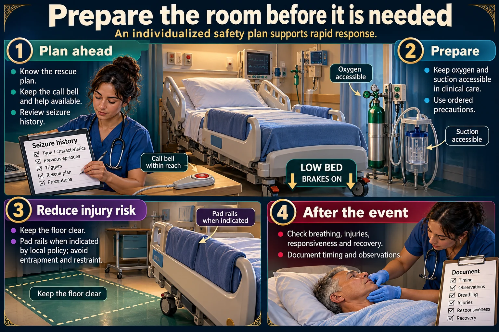
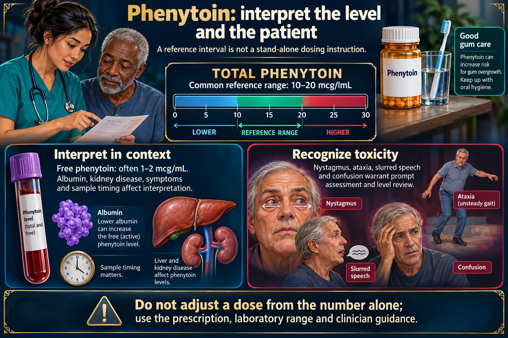
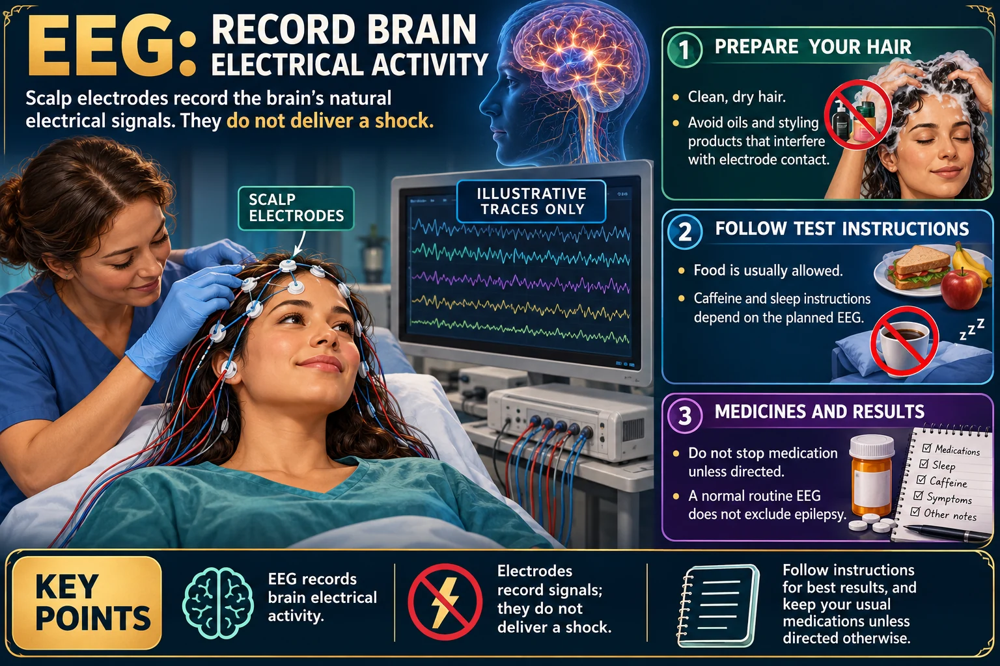

Seizures ⚡
Safety during · precautions before · drugs after
A seizure is a sudden, uncontrolled burst of electrical activity in the brain. Most stop on their own in under two minutes — so almost nothing you are tested on is about stopping it. It is about keeping the airway open and the patient uninjured while it runs, and knowing the exact minute it stops being a seizure and becomes status epilepticus.
📄 Simple Nursing original — opens in Drive →
Read the full PDF here
TYPES & PHASES
STEP 1 · CLASSIFYTwo questions sort every seizure: how much of the brain is involved, and what stage are we watching right now.

Read the diagram text
FOCAL GENERALIZED Begins in a network within one hemisphere. It can spread to both sides. Rapidly engages networks distributed on both sides of the brain. Describe what you see Record onset, movements, response, awareness, duration and recovery. Do not classify by fainting alone Consciousness changes do not by themselves prove generalized onset.

Read the diagram text
A prodrome is not the seizure. An aura can itself be a focal seizure; neither occurs in every person or before every tonic–clonic seizure. 1 TONIC Sustained stiffening. Consciousness is impaired; breathing may be affected. 2 CLONIC Repeated rhythmic jerking. Observe the pattern without restraining movement. 3 POSTICTAL Recovery may include confusion, sleepiness, headache or soreness. Reassess breathing and neurologic status. STIFFENING JERKING RECOVERY Time the actual event. Durations vary; a convulsive seizure at 5 minutes requires emergency treatment.
![Seizure types and first aid. Tonic-clonic, with a stiffening tonic phase then a jerking clonic phase; absence, brief staring with temporary loss of responsiveness; focal, altered awareness or localized symptoms, with the note that an aura can itself be a focal seizure. During a convulsive seizure: stay with the person, time it, clear hazards, cushion the head and gently turn onto the side when feasible - do not restrain, do not place anything in the mouth. Afterward: assess airway and breathing, assess for injury, check glucose as indicated, document observations. Call emergency help for a seizure lasting 5 minutes, repeated seizures without recovery, a first seizure, or injury or breathing difficulty; in hospital follow the rescue-medication protocol. Possible triggers: missed medicines, sleep loss, illness, withdrawal, metabolic disturbances.](../img/infographics/42-seizures-recognition-care.webp)
🧠 Generalized vs focal — how much brain is involved
🌍 The generalized types
- Tonic–clonic (“grand mal”) — stiffen then jerk, loss of consciousness. The one everyone pictures.
- Absence (“petit mal”) — brief blank staring, often in children; mistaken for daydreaming or inattention.
- Myoclonic — sudden brief jerks of a limb or the whole body.
- Atonic (“drop attack”) — all tone lost, the patient falls. Helmets are a real intervention.
- Tonic or clonic alone — stiffening only, or jerking only.
📍 The focal types
- Focal AWARE (old name: simple partial) — patient stays awake and can remember it. Symptoms match the lobe: jerking of one hand, a strange smell, tingling.
- Focal with IMPAIRED AWARENESS (old: complex partial) — altered awareness, staring, and automatisms: lip smacking, picking at clothes, fumbling.
- Focal to bilateral tonic–clonic — starts in one place and spreads to the whole brain.
⏱️ The phases — prodrome → aura → tonic → clonic → postictal
⭐ The AURA is a warning, not a symptom to fix
An aura is an unusual sensation immediately before the seizure — a smell, a taste, a rising feeling in the stomach, a flash of light, déjà vu.
Classic stem: the client says “I smell oranges and there aren’t any on my tray.” The best response is “Have you experienced this sensation before?” — you are establishing whether this is their usual aura, because if it is, a seizure is about to happen and you have seconds to make them safe.
🧨 What triggers seizures
- Missed or abruptly stopped antiseizure medication — the number one cause
- Fever (febrile seizures in young children)
- Head injury, stroke, brain tumor, meningitis
- Metabolic: hypoglycemia, hyponatremia, hypocalcemia, hypoxia
- Alcohol or benzodiazepine withdrawal; stimulant overdose
- Sleep deprivation, extreme stress, flashing lights in photosensitive epilepsy
- Eclampsia in pregnancy
🎭 Not every “seizure” is a seizure
Events that look like seizures but are not epileptic: syncope (brief jerks after fainting), psychogenic non-epileptic events, breath-holding spells in toddlers, migraine aura, and transient ischemic attacks.
Clues that point away from a true seizure include a gradual onset, eyes held tightly closed, side-to-side head shaking, very long duration with normal oxygen saturation, and no postictal confusion.
Treat the patient safely either way — the diagnosis is made on video EEG, not at the bedside.
⚠️ “Seizure” vs “epilepsy”
A seizure is a single event — anyone’s brain can have one under enough provocation.
Epilepsy is a chronic disorder of recurrent unprovoked seizures. A febrile seizure or a seizure from hypoglycemia is not epilepsy.
DURING THE SEIZURE
STEP 2 · DOThis is the highest-yield section on the page. If you learn one thing here, learn the order — and the three nevers.

Read the diagram text
STAY TIME PROTECT ASSESS Start the timer immediately and call for help from the bedside. 1 Protect from injury Clear hard objects. Cushion the head with something soft and flat. 2 Support the airway Gently turn onto the side when feasible; do not force movement. 3 Check recovery Monitor breathing and responsiveness. Reassure and remain with the person. Get emergency help for a first seizure, injury, breathing problems, a seizure in water, pregnancy, 5 minutes of convulsions, or repeated seizures without recovery.

Read the diagram text
1 Nothing in the mouth Do not insert fingers, spoons or other objects. A person cannot swallow their tongue. 2 No forced restraint Do not hold down the limbs or try to stop the movements. 3 Do not leave Stay and summon help. Withhold food and drink until fully alert. Protect the person and keep observing. Avoid actions that add injury or aspiration risk.
✅ The bedside picture
✅ Priority order at the bedside
❌ THE THREE NEVERS
Never insert anything into the mouth · never restrain or hold down the limbs · never leave the patient alone.
People cannot swallow their tongue. Forcing an object between clenched teeth breaks teeth, damages the airway and gets you bitten. Holding a convulsing limb causes fractures and dislocations — guide movements away from hazards instead of gripping.
👀 What to observe — you are the witness
The chart is the diagnostic test. Record:
- Time started and time stopped — exact, not “a few minutes”
- What the patient was doing immediately before; any aura reported
- Where it started and whether it spread (focal → generalized)
- Which body parts moved, and whether movement was symmetrical
- Eye deviation, pupil size, head turning
- Color — cyanosis, apnea
- Incontinence of urine or stool; tongue or cheek biting
- Level of consciousness during and after; duration of the postictal phase
⭐ If the seizure happens out of bed
- Ease them to the floor — do not try to lift or move them onto the bed
- Something soft under the head; clear the area
- Roll onto the side as soon as the jerking allows
- Nothing under the head that could obstruct breathing — a thin pillow or folded clothing, not a bulky cushion
- Stay, time it, and get help
STATUS EPILEPTICUS
STEP 3 · EMERGENCYA seizure that will not stop is a medical emergency — the brain is burning oxygen it cannot replace.

Read the diagram text
5 MINUTES of convulsions, or repeated seizures without recovery: activate emergency treatment. 1 Immediately Support airway and breathing; check glucose. Obtain help, monitoring and IV access. 2 First-line rescue Give a benzodiazepine using the ordered route and emergency plan. Monitor breathing. 3 Persistent seizure Repeat rescue dosing and give second-line therapy according to protocol; do not delay escalation. 4 Refractory status Urgent specialist / ICU care, airway support and continuous EEG as indicated.
🚨 The definition and the escalation ladder
💊 The #1 drug: a benzodiazepine
After the airway and breathing are secured, the priority is to STOP the seizure. The first-line agents are benzodiazepines:
- Lorazepam (brand: Ativan) — IV
- Diazepam (brand: Valium) — IV or rectal gel when there is no IV access
- Midazolam — intramuscular or intranasal when there is no IV access
Watch for the side effects: respiratory depression, hypotension and sedation. Have a bag-valve mask and monitoring in place before you push.
⚠️ Why it is dangerous
- Hypoxia — the patient is not ventilating effectively while convulsing
- Hyperthermia from sustained muscle activity
- Lactic acidosis, rhabdomyolysis and acute kidney injury
- Aspiration
- Permanent neuronal injury — neurons die from the metabolic demand
- Fractures and dislocations from the convulsion itself
🧪 Look for the cause while you treat
- Blood glucose — checked immediately; hypoglycemia both mimics and prolongs seizures
- Electrolytes — sodium, calcium, magnesium
- Antiseizure drug levels — a subtherapeutic phenytoin level often explains the whole event
- Toxicology, alcohol withdrawal history
- Oxygen saturation and capnography
- CT head once stable if the cause is unclear
⭐ The most common cause of status is an abrupt medication stop
Never stop an antiseizure medication abruptly — not for a procedure, not because the patient feels better, not because they ran out.
Doses are tapered over weeks under a provider’s direction. Teach patients to:
- Refill before running out and never skip doses
- Carry a medical alert ID
- Tell every prescriber and dentist what they take
- Call the provider rather than stopping if side effects appear
AFTER THE SEIZURE & PRECAUTIONS
STEP 4 · RECOVERThe postictal patient is confused, exhausted and at risk. And the padding should have been up long before any of this.

Read the diagram text
LOW BED • BRAKES ON 1 Plan ahead Know the rescue plan. Keep the call bell and help available. Review seizure history. 2 Prepare Keep oxygen and suction accessible in clinical care. Use ordered precautions. 3 Reduce injury risk Keep the floor clear. Pad rails when indicated by local policy; avoid entrapment and restraint. 4 After the event Check breathing, injuries, responsiveness and recovery. Document timing and observations.
✅ Postictal care
😴 What the postictal phase looks like
- Deep sleep, difficult to rouse — minutes to hours
- Confusion and disorientation, sometimes agitation
- Headache and generalized muscle soreness
- No memory of the event at all
- Possible temporary weakness on one side
Document this phase by name: “documented as the postictal phase.”
📝 How to document it
Write it so someone who was not there can classify the seizure:
“At 1412 client reported an odd smell, then had tonic–clonic activity beginning in the right arm and spreading to all four limbs (focal onset, becoming bilateral). Eyes deviated left. Cyanosis noted. Turned to left side, airway maintained, O₂ 2 L nasal cannula applied, side rails padded and up. Activity stopped at 1413:40 (100 seconds). Incontinent of urine. Postictal, deeply asleep, rousable to voice at 1425, oriented to person only. Vital signs …. Provider notified.”
🛏️ Seizure precautions — set up BEFORE anything happens
⚠️ Everyday safety teaching
- Showers, not baths — a seizure in a bath is a drowning risk
- Never swim alone; supervision at all times in water
- No driving until the legally required seizure-free interval is met — and clearance comes from the provider, not the nurse
- Avoid working at heights, with open flame, or with dangerous machinery
- Avoid known triggers: sleep deprivation, alcohol, flashing lights if photosensitive
- Medical alert bracelet at all times
- Teach family what to do — and what never to do — during a seizure
👨👩👧 Teach the family — and when to call 911
- Stay calm, time it, protect the head, turn them on their side
- Nothing in the mouth, no restraints, do not leave them
- Move furniture away; take glasses off; loosen anything tight at the neck
- Stay with them until they are fully awake and oriented
Call emergency services if: the seizure lasts > 5 minutes · a second seizure follows without recovery · the patient does not wake up · breathing is difficult · it happened in water · they are injured, pregnant, or diabetic · it is their first seizure.
🤰 Pregnancy and antiseizure drugs
Several antiseizure medications are teratogenic — valproic acid in particular carries a high risk of neural tube defects and is generally avoided in people who could become pregnant. Carbamazepine also carries risk.
Teach that a pregnancy must be planned with the prescriber, that folic acid supplementation is routinely recommended, and that the medication is never stopped without medical advice — an uncontrolled seizure is dangerous for both mother and fetus.
✅ When drugs are not enough
- Ketogenic diet — high fat, very low carbohydrate; used mainly in refractory pediatric epilepsy and requires dietitian supervision
- Vagus nerve stimulator — an implanted device; the patient can swipe a magnet over it when an aura starts
- Responsive neurostimulation / deep brain stimulation
- Epilepsy surgery — resection of a well-localized focus after video EEG mapping
🧊 A note on febrile seizures
Common in children roughly 6 months – 5 years, triggered by a rapid rise in temperature. Most are brief, generalized and do not cause brain damage.
Teach parents: control fever with antipyretics as directed, keep the child safe and side-lying during the event, and do not use ice baths or alcohol rubs — rapid cooling causes shivering, which raises the temperature again.
DRUGS & DIAGNOSTICS
STEP 5 · TREATKnow the names, the one big monitoring point for each, and the rule that applies to every single one of them.

Read the diagram text
TOTAL PHENYTOIN Common reference range: 10–20 mcg/mL 0 5 10 15 20 25 30 LOWER REFERENCE RANGE HIGHER Interpret in context Free phenytoin: often 1–2 mcg/mL. Albumin, kidney disease, symptoms and sample timing affect interpretation. Recognize toxicity Nystagmus, ataxia, slurred speech and confusion warrant prompt assessment and level review. Do not adjust a dose from the number alone; use the prescription, laboratory range and clinician guidance.

Read the diagram text
SCALP ELECTRODES ILLUSTRATIVE TRACES ONLY Clean, dry hair Avoid oils and styling products that interfere with electrode contact. Follow test instructions Food is usually allowed. Caffeine and sleep instructions depend on the planned EEG. Medicines and results Do not stop medication unless directed. A normal routine EEG does not exclude epilepsy.
🚨 The rule that applies to every antiseizure drug
Never stop an antiseizure medication abruptly.
Abrupt withdrawal precipitates status epilepticus. Doses are tapered slowly. This is true of all of them, and it is the most commonly tested single fact about the class.
💊 The drugs by name
| Drug | The thing you monitor / teach |
|---|---|
| Phenytoin (Dilantin) | Therapeutic level commonly cited as 10–20 mcg/mL (a typical adult range that varies by lab); hold and report above 20. Gingival hyperplasia — meticulous oral care and dental visits. Nystagmus is an early toxicity sign. IV: mix with normal saline only (precipitates in dextrose) and infuse slowly. Tube feeding: continuous enteral feeding binds phenytoin and lowers absorption. Hold the feeding 1–2 hours before and after each dose (per policy), flush the tube with water before and after, shake the suspension well, and never add it to the feeding bag. Check the level (10–20 mcg/mL), and again whenever feedings start or stop: the level can swing.Side note (newer guidance): report an unexpected or above-range result and follow the ordered hold parameters. |
| Fosphenytoin | A prodrug of phenytoin used IV/IM in emergencies; fewer infusion-site problems, still monitor cardiac rhythm and blood pressure. |
| Levetiracetam (Keppra) | Well tolerated; watch for mood and behavior changes — irritability, agitation, depression. Driving permission comes from the provider. |
| Carbamazepine (Tegretol) | Blood dyscrasias (agranulocytosis, aplastic anemia), Stevens–Johnson syndrome, hyponatremia, many interactions. Report sore throat, fever, bruising or rash. |
| Valproic acid / divalproex | Hepatotoxicity and pancreatitis; thrombocytopenia; teratogenic — neural tube defects. Monitor LFTs, ammonia, platelets. |
| Lamotrigine | Serious rash / Stevens–Johnson syndrome — titrate slowly and report any rash immediately. |
| Phenobarbital | Sedation, respiratory depression, dependence; strong enzyme inducer. |
| Lorazepam · diazepam · midazolam | Rescue drugs for an active seizure or status. Respiratory depression, hypotension, sedation. |
🧪 Phenytoin level — the number you must recognize
A reported level of 22 mcg/mL means hold the dose and notify the provider. Do not give it and document later.
10–20 mcg/mL is the commonly cited therapeutic range for total serum phenytoin; it is a typical adult reference range and varies by laboratory (and free/unbound levels use a different range) — always check the range reported with your patient’s result.
📈 EEG and imaging
🖼️ The other diagnostics
- CT head — first-line after a new seizure to exclude bleed, tumor or trauma
- MRI — better for structural lesions and mesial temporal sclerosis
- Blood glucose, electrolytes, calcium, magnesium
- Antiseizure drug levels and a toxicology screen
- Lumbar puncture if infection is suspected
🎯 NCLEX traps on this topic
| The stem says… | The answer is… |
|---|---|
| “Client is actively seizing — first action?” | Turn the client to the side (airway) |
| “Which action does the nurse take during a seizure?” | Protect the head / clear the area — never insert anything, never restrain |
| “I smell oranges and there aren’t any on my tray” | “Have you experienced this sensation before?” — that is an aura |
| “Deep sleep and confusion after the event — documented as?” | The postictal phase |
| “Seizure has lasted 6 minutes” | Status epilepticus — airway, then IV/rectal benzodiazepine |
| “Phenytoin level is 22 mcg/mL” | Hold the dose and notify the provider |
| “Continuous tube feeding, phenytoin suspension ordered” | Hold the feeding 1–2 h before and after the dose and flush the tube — never add it to the bag |
| “Preparing for an EEG — which instruction?” | No caffeine for 12–24 h · wash the hair · eat beforehand (not NPO) |
| “Client on levetiracetam asks about driving” | Driving permission must come from the provider |
| “Client feels better and wants to stop the medication” | Never stop abruptly — it causes status epilepticus |
| “Safe bathing for a client with epilepsy?” | Take showers rather than baths |
QUIZ CHECK
STEP 6 · WHAT THE PRACTICE QUIZ ASKSThe points the seizure practice quiz in NUR 258 Module 7 tests that are not spelled out above. The questions themselves are in the NUR 258 Mega Quiz.
⚡ What drives a seizure, and what sets one off
- Glutamate excites, GABA inhibits. A seizure is too much excitation or too little inhibition. Benzodiazepines and phenobarbital work by strengthening GABA.
- Who is at risk: hypoglycemia and other metabolic or electrolyte problems, fever, CNS infection such as meningitis, stroke, head injury, brain tumor, and alcohol or drug withdrawal.
- Triggers to teach: avoid alcohol (it lowers the seizure threshold), sleep loss, dehydration and heat, hormone shifts (menstruation, ovulation, pregnancy), flashing lights if photosensitive, stress, and missed doses.
🧠 Telling the types apart
- Focal aware (simple partial): stays aware and remembers it — a brief sensory change such as vision changes or tingling.
- Focal impaired awareness (complex partial): blank stare plus automatisms (lip smacking, hand rubbing, picking) that the client does not remember.
- Absence: a few seconds of staring that looks like daydreaming, mostly in children, with immediate recovery.
- Atonic (drop attack): sudden loss of tone and a fall, often head first — a helmet protects the head.
- Tonic-clonic = generalized: aura → stiffening → rhythmic jerking, often incontinence and a bitten tongue; afterwards sleepy, sore, with a headache — let them sleep.Side note (newer guidance): Tonic–clonic seizures can be generalized from onset or evolve from a focal seizure. Observe onset, awareness, movements and recovery; continue breathing and safety assessment afterward.
- An aura is a warning: get the client down safely, side-lying, head protected, and start timing. More than 5 minutes is status epilepticus — call for help and expect IV medication.
💊 Drugs, diet and the EEG
- Phenytoin 10–20 mcg/mL. Below 10 the client is unprotected: seizure precautions and report. Above 20 is toxicity (nystagmus, unsteady gait, slurred speech).Side note (newer guidance): The commonly cited total phenytoin range is 10–20 mcg/mL. Interpret with symptoms, timing, albumin, renal function and free levels when indicated; values alone do not prove seizure protection or toxicity.
- Phenytoin teaching: no antacids within 2 hours (less absorption), report any rash (Stevens-Johnson), report sore throat or easy bruising (low blood counts), meticulous oral care for gum overgrowth, regular blood levels.
- Lorazepam → flumazenil. Lorazepam is a benzodiazepine, so flumazenil is the reversal agent to have on hand.Side note (newer guidance): Flumazenil can precipitate seizures and is contraindicated when a benzodiazepine is being used to control status epilepticus. Support ventilation and follow specialist guidance for adverse benzodiazepine effects.
- Phenobarbital: watch for respiratory depression and hypotension.
- Ketogenic diet: high fat, very low carbohydrate, for children whose seizures are not controlled by medication.
- EEG prep: wash the hair, no caffeine (the client may eat), antiseizure drugs held only as prescribed, no sedative unless ordered.
- Precautions recap: bed lowest, padded rails, oxygen and suction, IV access, loosen clothing, something soft under the head — never restraints, nothing in the mouth.